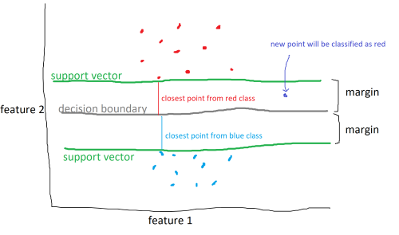
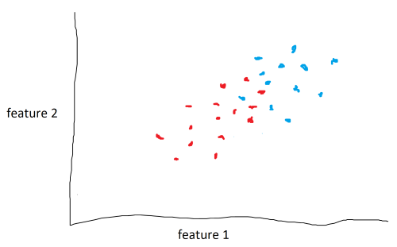
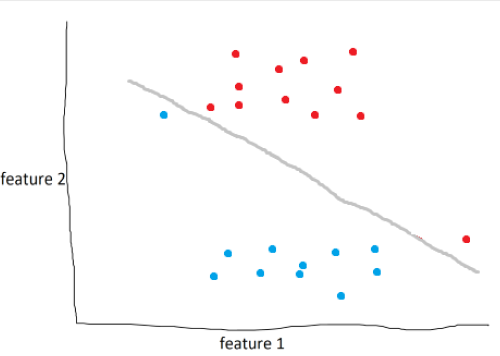
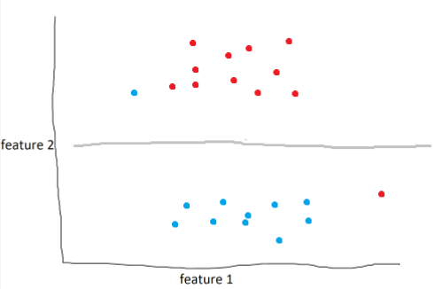

Introduction
Support vector machines are a powerful supervised machine learning model that classifies new data (much like KNN). The difference is, instead of calculating the k-closest neighbors, SVM’s use a mathematical function to split the data in some way. And not just some way, but the most optimal way.

The data above are categorized into two different classes and are split by three lines. There are an infinite number of lines that split the data. The SVM algorithm aims to find the line, known as a decision boundary, that maximizes the margin, which is the distance between the decision boundary to the closest point from each class, called the support vectors.

However, data won’t always be easy to split. In some cases, classes may overlap or it may not be clear how to divide the classes.

As seen above, although it is clear that the data lie in two different classes, it isn’t clear where the decision boundary should be.
The solution is to use a kernel function or kernels. A kernel function adds an additional feature, or dimension, to the data. In the example above, a kernel function could attempt to raise the blue points above the red points and drop a hyper-plane between them to act as a decision boundary. the data couldn’t be seperated in the second dimension, so we do it in the third. It is important to note that the kernel function does not add any additional data. It uses feature 1 and feature 2 to generate feature 3.
SVM’s can also utilize soft margins to create more intelligent decision boundaries.

In the example above, the model draws the optimal line to seperate blue and red. However, as humans, it’s obvious that this isn’t the best line. What we can do is define a soft margin of 2 to allow for miss-classifications of up to two points. Soft margins are basically a tolerance that we can use to make our model more accurate in general.
With a soft margin of 2, the decision boundary would look something like:

Implementing SVC using sklearn
We will import breast cancer data and train and test a SVM classifier to classify tumors as malignant/benign.
from sklearn.datasets import load_breast_cancer
from sklearn.model_selection import train_test_split
from sklearn.svm import SVC
from sklearn.neighbors import KNeighborsClassifier
data = load_breast_cancer()
x = data.data
y = data.target
Next, we split the data. 80% for training the model, 20% for testing.
x_train, x_test, y_train, y_test =
train_test_split(x, y, test_size=0.2)
Create an SVM classifier model with a linear kernel and a soft margin of 5.
clf = SVC(kernel='linear', C=5)
Train the model.
clf.fit(x_train, y_train)
Test the model.
print(f'SVC: {clf.score(x_test, y_test)}')
Output:
SVC: 0.9736842105263158
The SVM model can classify new tumors with 92-97% accuracy.
As a bonus, we can compare SVM and KNN classifiers. Create, train, and test KNN model
clf2 = KNeighborsClassifier(n_neighbors=5)
clf2.fit(x_train, y_train)
print(f'KNN: {clf2.score(x_test, y_test)}')
Output:
KNN: 0.9385964912280702
The results of the two models are generally very close, with the SVM classifier outperforming KNN occasionally.